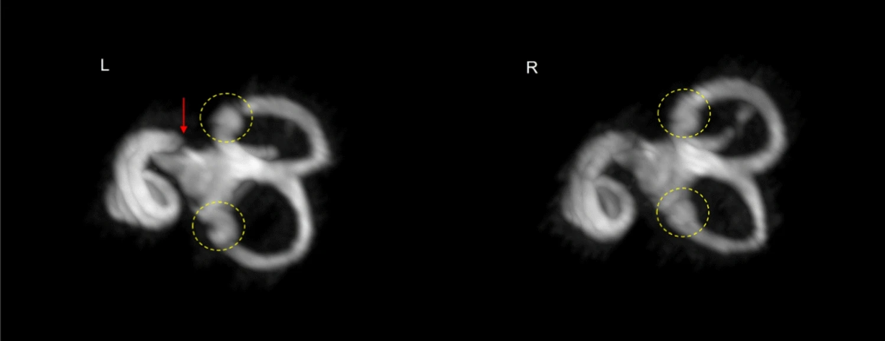
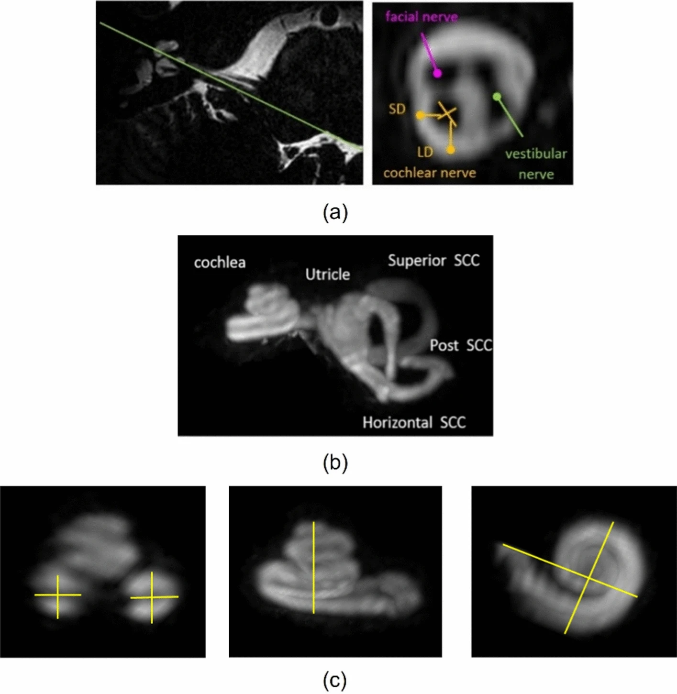

 Imágenes de RM de alta resolución del oído interno Aphiwatthanasumet, K., Jethwa, K., Glover, P. et al. (2024).
 a) Diámetro largo (DL), corto (DC) y ASC. b) Imágenes MIP del oído interno. c) Medición de las dimensiones cocleares. Vista posterior hueso temporal izquierdo Aphiwatthanasumet et al. (2024)